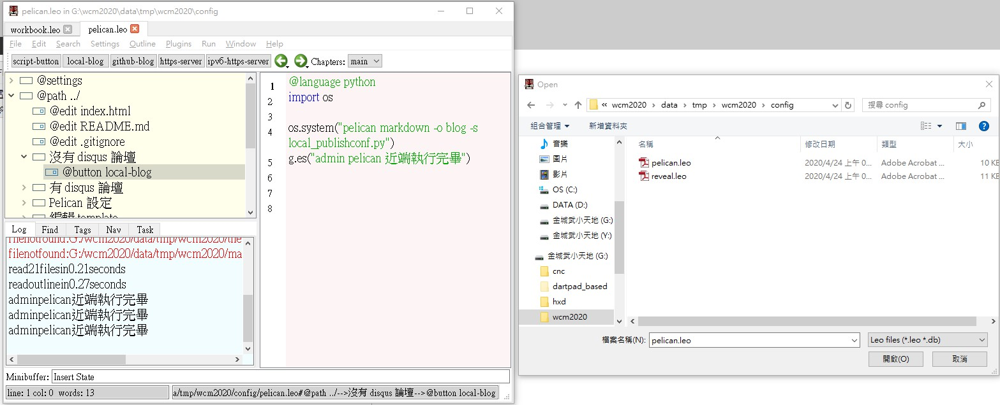
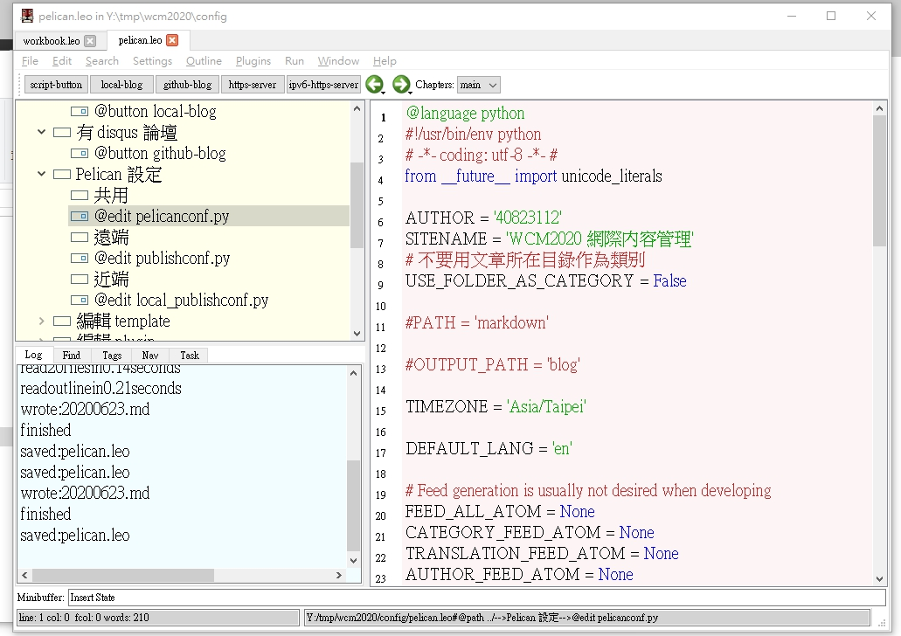
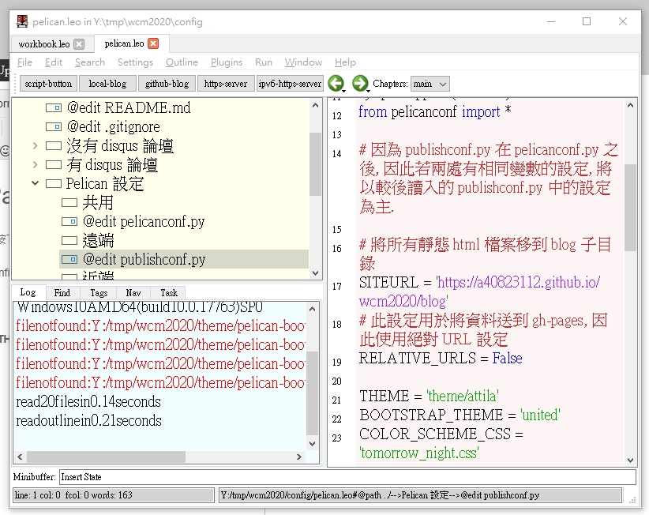
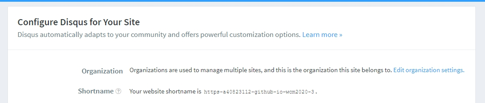
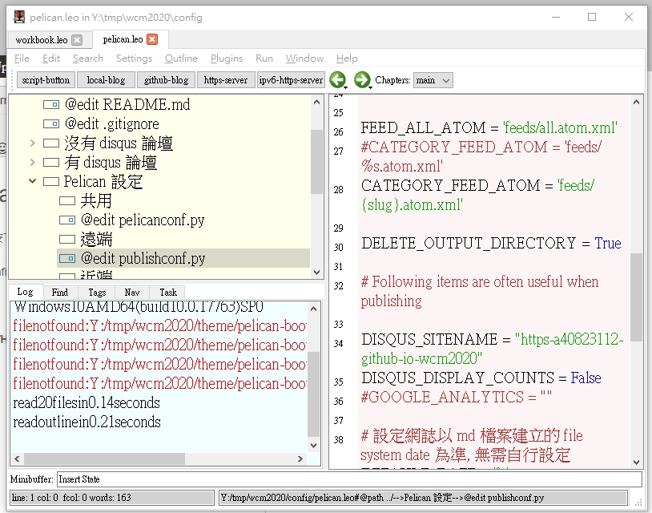
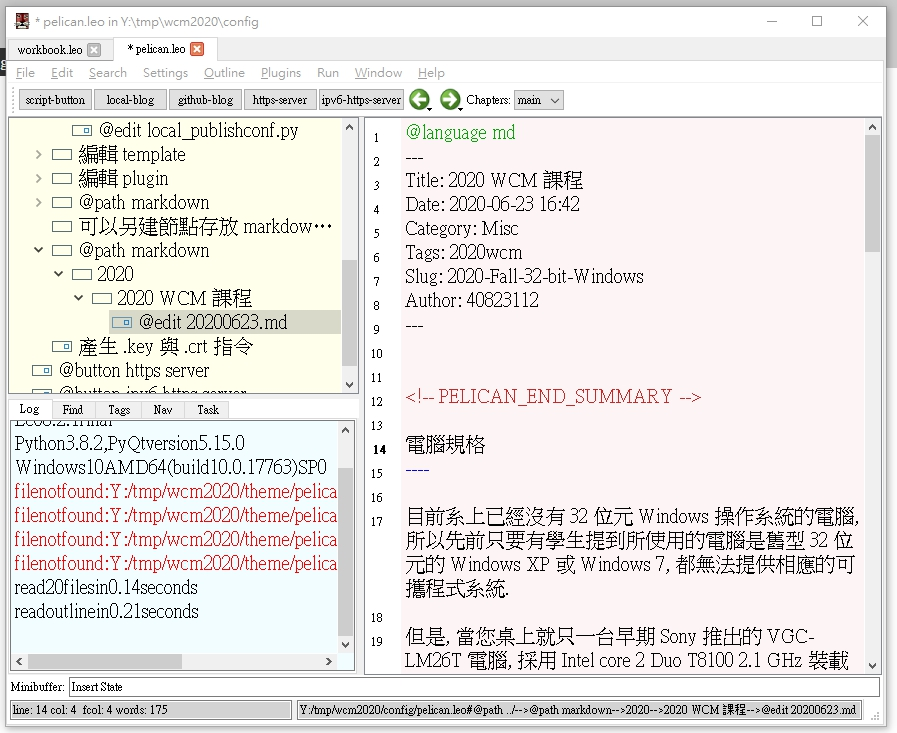

如何安裝虛擬主機 <<
Previous Next >> 如何在虛擬主機上clone倉儲
如何使用leo編輯Palican
1.利用Scite開啟launchLeo.py，並且按Tools-Go
2.開啟FIle-Open-Outline，選擇倉儲config目錄中的pelican.leo

3.進入Pelican設定，更改共用中的AUTHOR與SITENAME

4.更改遠端中的SITEURL與DISQUS_SITENAME
SITEURL 更改為倉儲Blog路徑

DISQUS_SITENAME 更改為自己的Disqus


5.進入markdown來更改Blog內容

6.更改完內容後save，並在編輯器上輸入
pelican markdown -o blog -s local_publishconf.py
pelican markdown -o blog -s publishconf.py
7.輸入後push即可
如何安裝虛擬主機 <<
Previous Next >> 如何在虛擬主機上clone倉儲